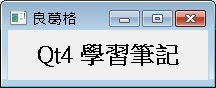

如 果您的作業環境是中文環境，並想讓Qt視窗程式顯示中文，最簡單的方法就是使用Unicode轉換，這必須使用到QTextCodec類別的方法。
QTextCodec提供靜態的codecForName()方 法，可以指定國際化文字名稱，以正體（繁體）中文來說是指定Big5-ETen，codecForName ()方法會傳回QTextCodec實例，您使用實例的toUnicode()方 法將Big5碼轉換為Unicode，然後當作一 個QString使用，下面這個程式是個簡單的實作：
#include <QApplication>
#include <QLabel>
#include <QTextCodec>
int main(int argc, char *argv[]) {
QApplication app(argc, argv);
QTextCodec *codec = QTextCodec::codecForName("Big5-ETen");
QLabel *label = new QLabel;
label->setText(codec->toUnicode("<center><h1>Qt4 學習筆記</h1></center>"));
label->setWindowTitle(codec->toUnicode("良葛格"));
label->resize(200, 50);
label->show();
return app.exec();
}如果沒有黑體字的部份來轉換中文字碼，而直接指定中文字的話，程式執行時將出現亂碼。
下面為程式執行時的參考畫面：
